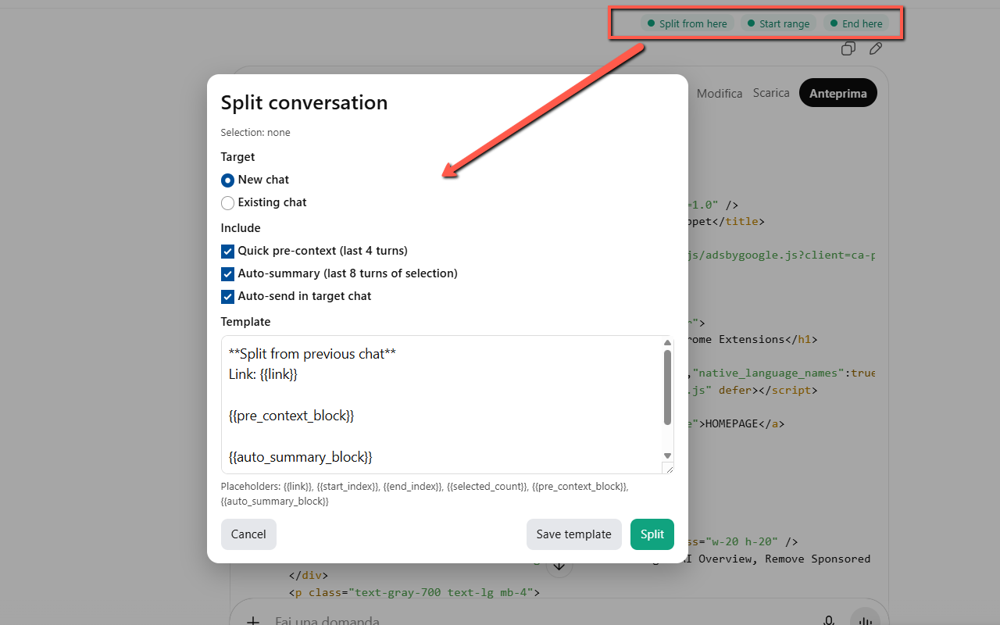
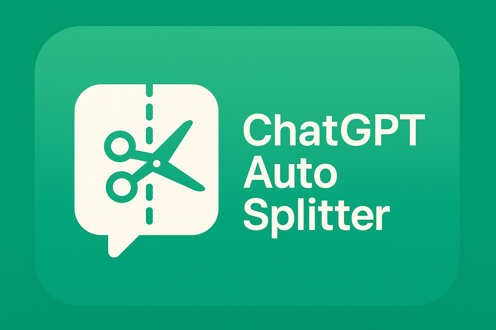

ChatGPT Auto Splitter
Ever find your ChatGPT session drifting from a quick question into a sprawling multi-topic marathon? ✂️ ChatGPT Auto Splitter brings order to that chaos by letting you break a conversation into focused threads without losing context. With a single click, you can split from any message—or select a range— and move the meaningful slice to a new chat or to an existing one. The handoff includes a link back to the original thread, a compact pre-context (the last few turns before your selection), and a concise auto-summary of the selected part. That means you keep continuity while starting fresh, staying fast, and staying focused. 🔗⚡️
Auto Splitter is built for real workflows, not just clean transcripts. Researchers can branch a deep dive into a dedicated sub-topic; product managers can move requirements into a clean thread; developers can isolate a bug discussion from a larger feature chat. Writers can pull a section into its own space for revision and feedback. Every split preserves the knowledge graph of your work by linking back to the source and carrying lightweight context forward. You can also choose to auto-send the handoff so the new chat begins immediately—perfect for keeping momentum when performance slows or the conversation has grown heavy. 🧠📚
The extension gives you fine-grained control. Start from any message with “Split from here,” or define a precise start and end to create a range. Choose a target: a fresh chat for clarity, or an existing chat when you’re consolidating knowledge. The handoff template is fully customizable—set your tone and language, insert or remove sections, and use placeholders for the link, indices, pre-context, and summary. A small on-page badge shows the message count and (optionally) triggers an auto-split when a threshold is reached, keeping performance snappy on long threads. Behind the scenes, Auto Splitter uses resilient insertion strategies to cooperate with the ChatGPT composer (including Projects), so your text lands in the box, ready to go. 🧩🔧
Privacy matters: everything happens locally in your browser; no external services or logins are required. Auto Splitter is lightweight, fast, and designed to reduce friction for people who treat ChatGPT as a long-term thinking environment—students, engineers, analysts, creators, and anyone who hates losing useful content inside a monolithic thread. The result is a calmer, more navigable workspace where each topic gets its own runway and every important detour becomes a reusable asset. Start split, stay organized, and never lose the thread again. ✨🗂️
🛠️ How to Use
- Install the extension from the Chrome Web Store.
- Open any ChatGPT conversation (supports regular chats and Projects).
- Click Split now or use the per-message chip to Split from here (or select a range start → end).
- Choose a target: New chat or Existing chat (paste a URL or pick from recent chats).
- Customize the handoff (template, language, pre-context, summary) and enable Auto-send if desired.
- Confirm and continue in your fresh, focused thread—your linkback is included. ✅
📷 Screenshots


✅ Features
- Split from any message or select a custom range
- Move to a new chat or an existing chat (URL or recent list)
- Linkback to the source + pre-context + auto-summary
- Customizable handoff template and language
- Auto-send and optional auto-split threshold with live counter
- Works with ChatGPT Projects; resilient composer insertion
- Runs locally—no logins, no external services